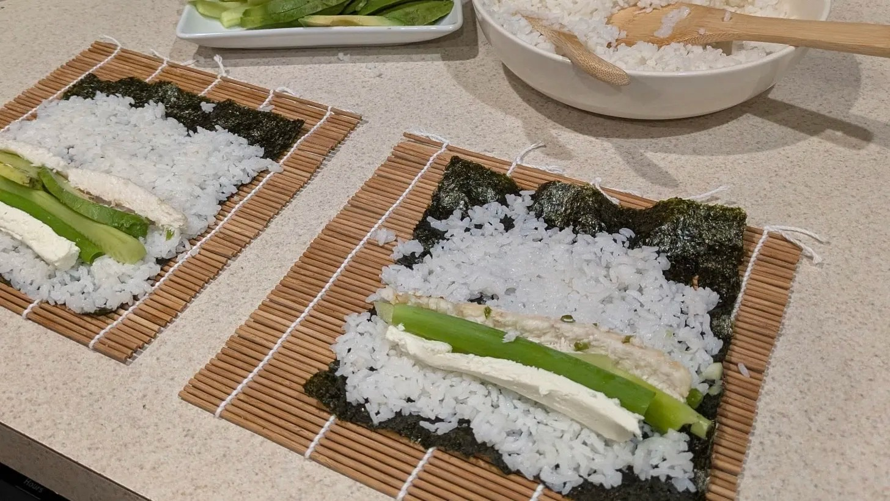

Pompano Sushi
Home

Description
A simple sushi recipe made with pompano, although you could substitute it for other kinds of fish. This particular recipe is one that I threw together based on a few others after my partner caught a few pompano and we wanted to try making something new with it.
I like to mix and match toppings on my rolls, so feel free to leave out any you don't like. Or add something you think sounds good!
Ingredients
- Sushi Rice
- Baked Pompano
- Nori Sheets
- 1 Avocado, sliced longways
- 1 Cucumber, peeled and sliced into thin sticks
- 3 Scallions, stalks seperated
- Cream Cheese
Recipe
- Place the nori sheet rough side up on the bamboo mat. Wet fingers and evenly spread rice on top of the nori, leaving an empty edge for rolling later.
- Place desired toppings (Baked Pompano, Avocado, Cucumber, Scallions, and/or Cream Cheese) a few inches from the bottom edge of the nori sheet, opposite of the area we left clear for rolling.
- Start rolling your sushi by lifting the edge of the bamboo mat and rolling it away from you. Carefully tuck ingredients in as you roll if necessary.
- When you are almost done rolling, wet the edge of the nori then finish. This ensures it sticks to itself, completing your roll.
- Unroll the mat and move the sushi roll to a cutting board. First cut the roll in half, then line the two pieces up and cut into four pieces.
- Repeat with the remaining rolls then serve.